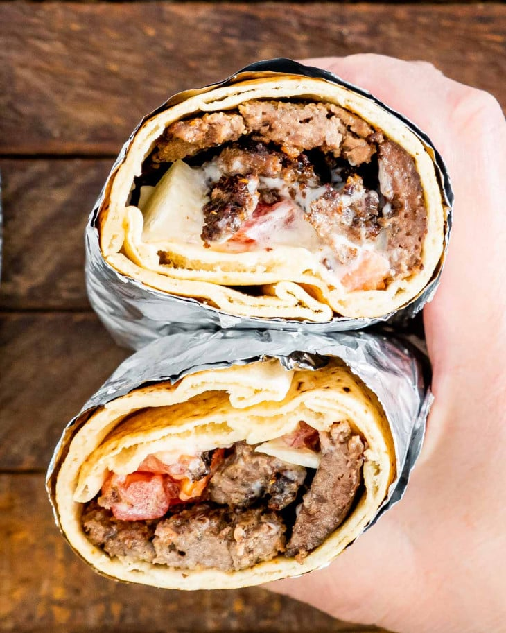

The Halifax Donair

From the east coast of Canada we present to you the Halifax donair! Lucky for you, you don't have to travel
all the way there because we have one of the best recipes so that you can make it right at home. So what are we
waiting for lets dive right in.
Meat ingredients:
- 2 lbs Beef
- 1 tbsp Onion powder
- 1 tbsp Garlic powder
- 1 tbsp Corriander
- 2 tsp Dried Oregano
- 1/2 tsp Dried Thyme
- 1/2 tsp Cayenne pepper
- 1 tsp Salt & Pepper
Sauce ingredients:
- 10 ounce of evaporated milk
- 1/2 cup of sugar
- 1 teaspoon of Garlic powder
- 1/4 cup of vingear
Steps:
- Make Donair sauce: Whisk all the donair sauce ingredients together, cover with plastic wrap and refrigerate until ready to use.
You’ll want to make this in the beginning, to give the sauce ingredients time to blend together.
- Make the meat mixture: Add all the donair meat ingredients to the bowl of your stand mixer and mix using the dough hook for about 5 minutes on medium low.
- Form a meat mixture and cover with foil: Form the meat into a loaf that’s about 8 inches in length. Make sure to knead it and roll the loaf so that it’s as tight as possible and all the air is out of it.
Cover the loaf tightly with aluminum foil,
rolling the ends tightly, so that it forms an even log. If you have skewers, thread 2 skewers through the log. Transfer the loaf to the fridge and let it rest for 30 minutes up to 24 hours.
- Prep Oven and Baking sheet: Preheat the oven to 350°F. Line a baking sheet with aluminum foil. Place the log on the baking sheet, propping the skewers on the edges.
- Bake: Transfer the baking sheet to the oven and bake for 1½ hours. Remove the foil from the donair log and place the skewers back on the baking pan.
Bake for another 30 minutes or until browned all over. Let it cool before slicing.